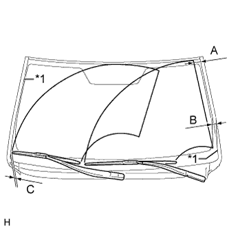
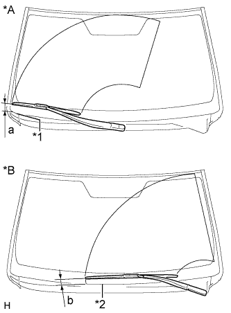

FRONT WIPER MOTOR > ON-VEHICLE INSPECTION |
| 1. INSPECT WINDSHIELD WIPER MOTOR ASSEMBLY |
|  |
Operate the front wipers while spraying washer fluid on the windshield glass. Make sure that the front wipers function properly and the wipers do not come into contact with the vehicle body.
| Area | Standard Condition |
| A | 47.5 mm (1.87 in.) |
| B | 30.4 mm (1.20 in.) |
| C | 9.5 mm (0.374 in.) |
| *1 | Moulding Edge |
|  |
Stop the front wiper motor and link assembly operation.
Check the automatic stop position.
| Area | Standard Condition |
| a | 35.6 to 55.6 mm (1.40 to 2.19 in.) |
| b | 18.9 to 38.9 mm (0.744 to 1.53 in.) |
| *A | for RH Side |
| *B | for LH Side |
| *1 | Cowl Side Seal Edge |
| *2 | Louver Edge |